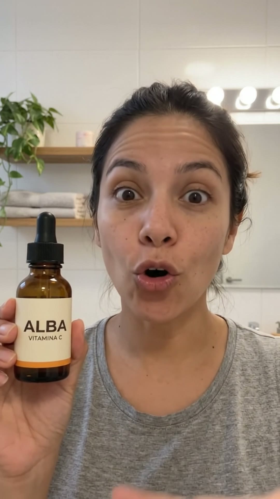
Dormía ocho horas…
▶ AVATAR ADS 1.0
01 Hook · cara0,0 s
«Dormía ocho horas y aun así…» Toma natural, sin zoom.
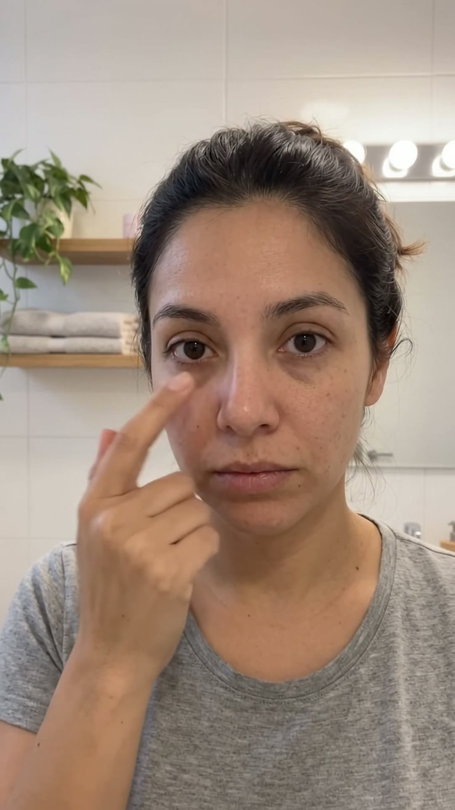
mi cara decía que no
había dormido nada.
▶ AVATAR ADS 1.0
02 B-roll cansada2,0 s
Se toca la ojera frente al espejo (B-roll 01).
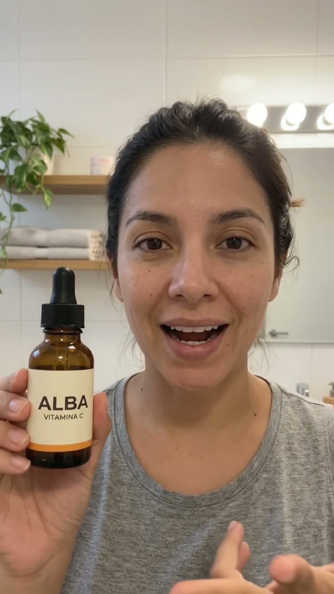
Probé cremas caras,
mascarillas…
▶ AVATAR ADS 1.0
03 Cara · cuenta5,1 s
Va contando con los dedos.
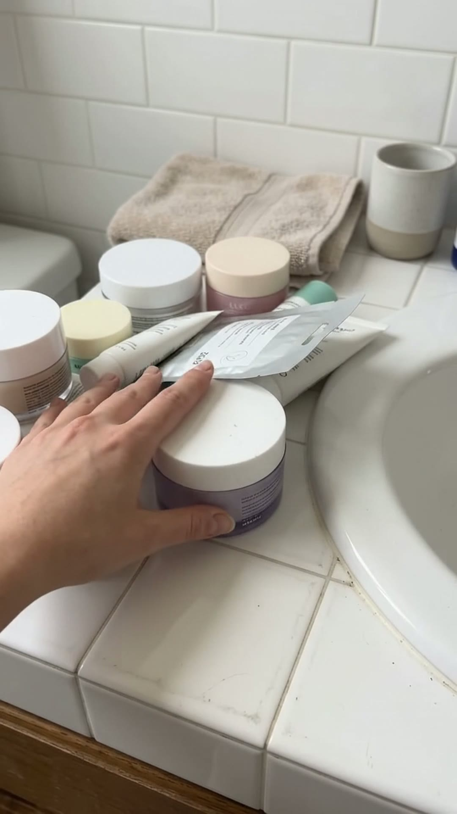
de todo… y mi piel
seguía apagada,
▶ AVATAR ADS 1.0
04 B-roll cremas7,3 s
Su mano aparta las cremas que no funcionaron (B-roll 02).
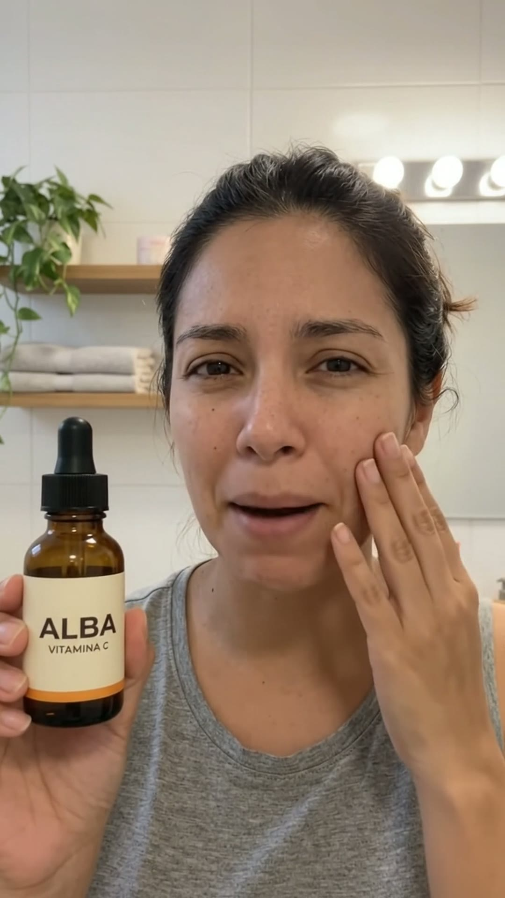
como sin vida.
▶ AVATAR ADS 1.0
05 Cara · frustración9,6 s
Se pasa la mano por la mejilla.
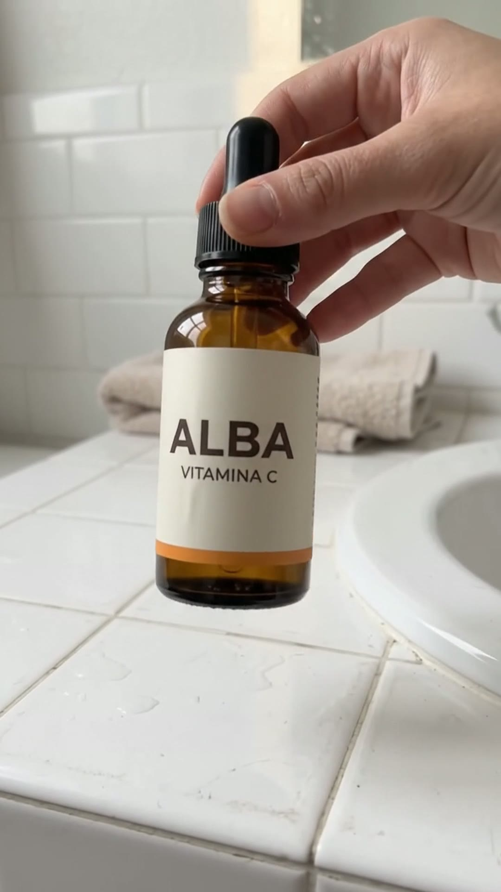
Hasta que empecé a usar…
▶ AVATAR ADS 1.0
06 B-roll aparece ALBA10,8 s
Su mano toma el frasco del lavabo: el giro de la historia (B-roll 03).
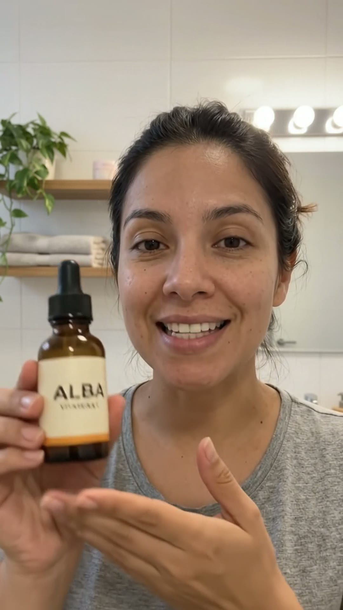
ALBASérum de vitamina C
este sérum de vitamina C.
▶ AVATAR ADS 1.0
07 Cara · marca12,4 s
Acerca el frasco. La marca aparece una sola vez, arriba.
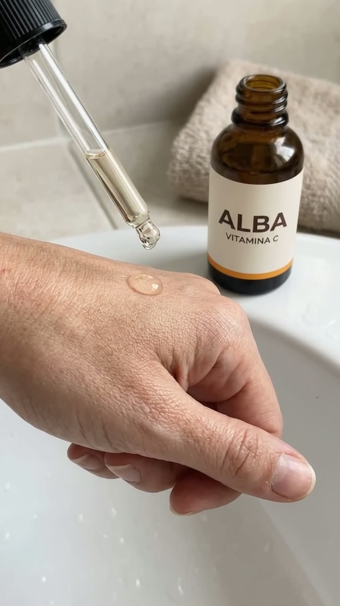
Dos gotas cada mañana,
nada más.
▶ AVATAR ADS 1.0
08 B-roll gotas14,4 s
Dos gotas sobre el dorso de la mano (B-roll 04).
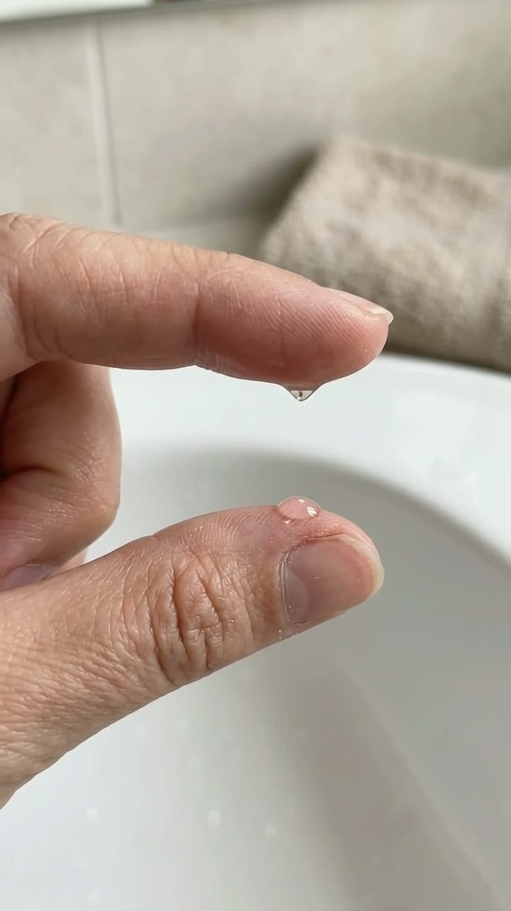
Es súper ligero,
▶ AVATAR ADS 1.0
09 B-roll textura16,5 s
La textura entre los dedos (B-roll 05).
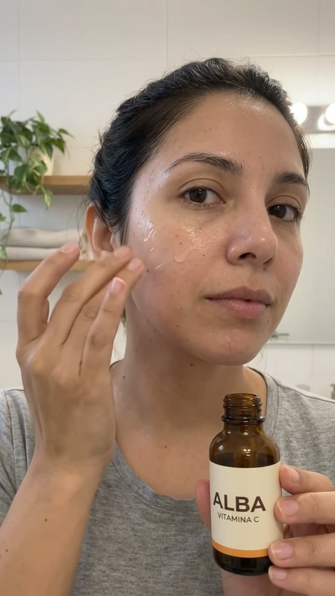
se absorbe en segundos
▶ AVATAR ADS 1.0
10 B-roll aplicación18,0 s
Se lo aplica en la mejilla (B-roll 06).
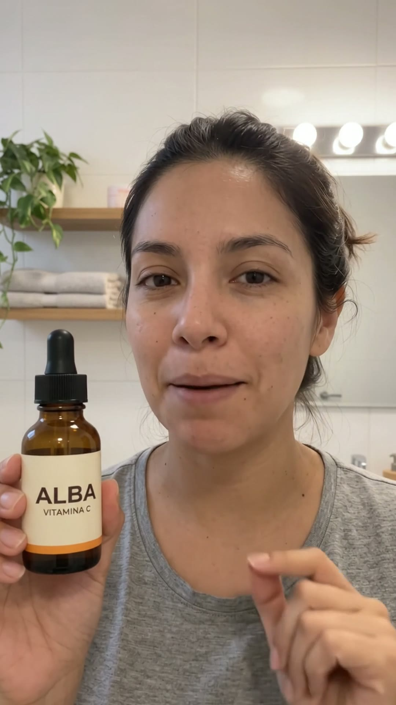
y no te deja la piel grasosa.
▶ AVATAR ADS 1.0
11 Cara · niega19,8 s
Niega con el dedo.
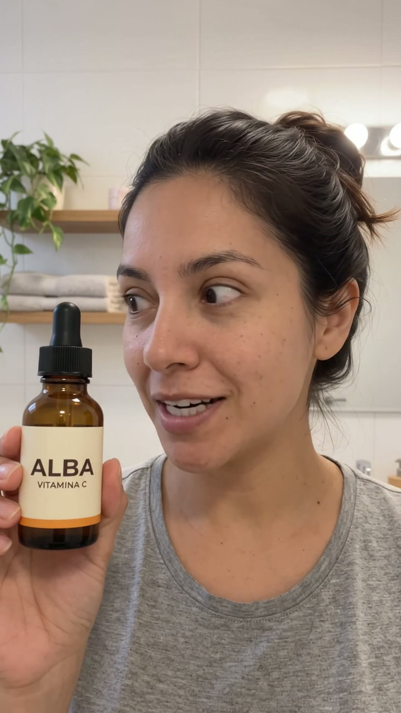
Hoy me miro al espejo…
▶ AVATAR ADS 1.0
12 Cara · espejo21,6 s
Mira hacia un lado, como a su reflejo.
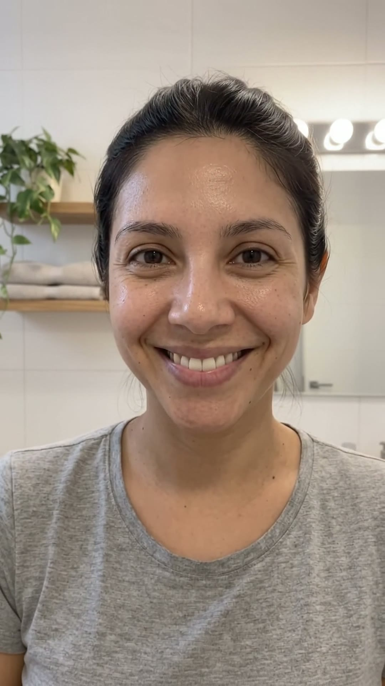
y me veo despierta,
fresca, con brillo…
▶ AVATAR ADS 1.0
13 B-roll resultado23,2 s
Piel luminosa: se mira y sonríe (B-roll 07).
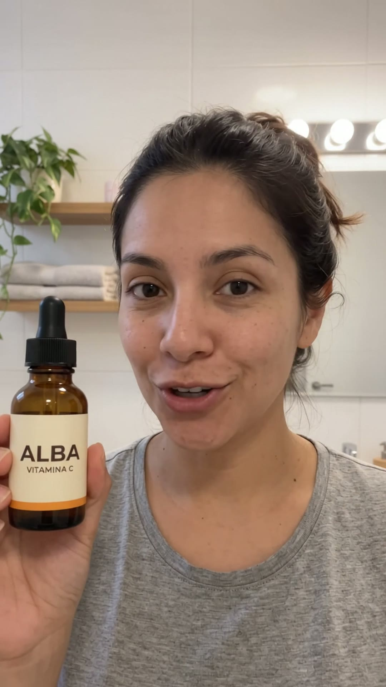
y eso que no llevo
maquillaje.
▶ AVATAR ADS 1.0
14 Cara · orgullo26,4 s
Se señala la cara, cómplice.
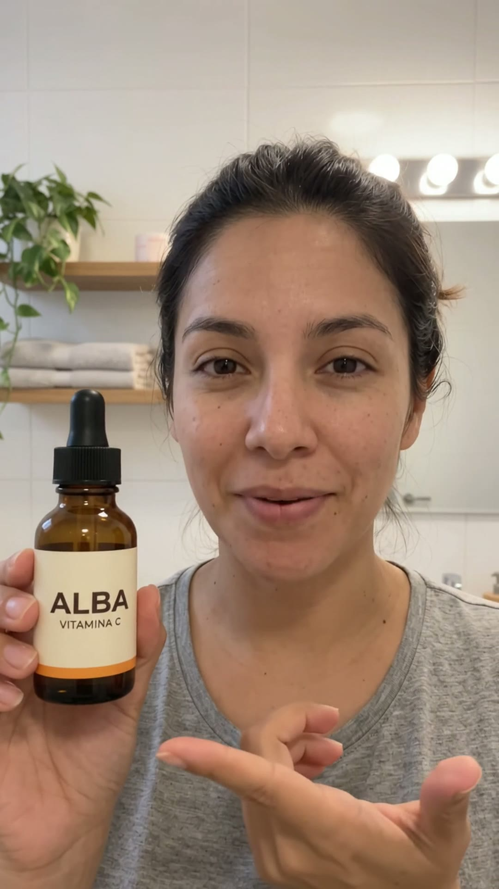
Si tu piel también se ve
cansada, pruébalo.
▶ AVATAR ADS 1.0
15 CTA · cara28,8 s
Te habla directo y levanta el frasco en «pruébalo».
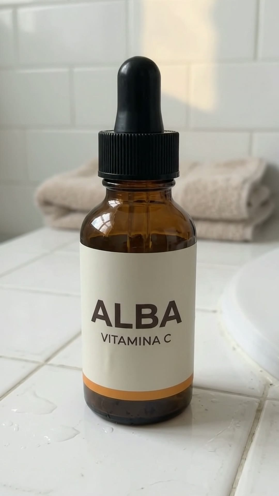
Lo consigues en el
botón de abajo.
Comprar ↓
▶ AVATAR ADS 1.0
16 B-roll + botón31,8 s
El frasco sobre el lavabo y el botón, que late (B-roll 08).